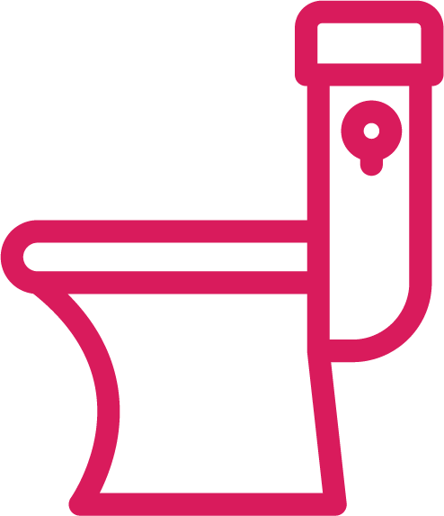
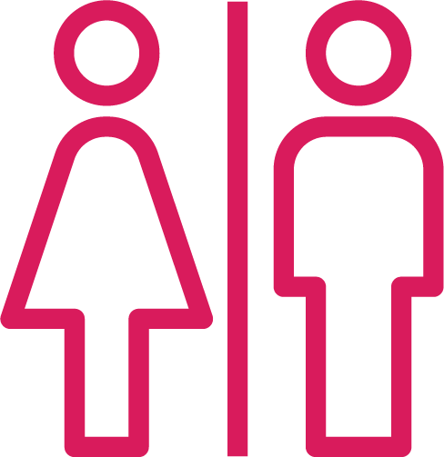
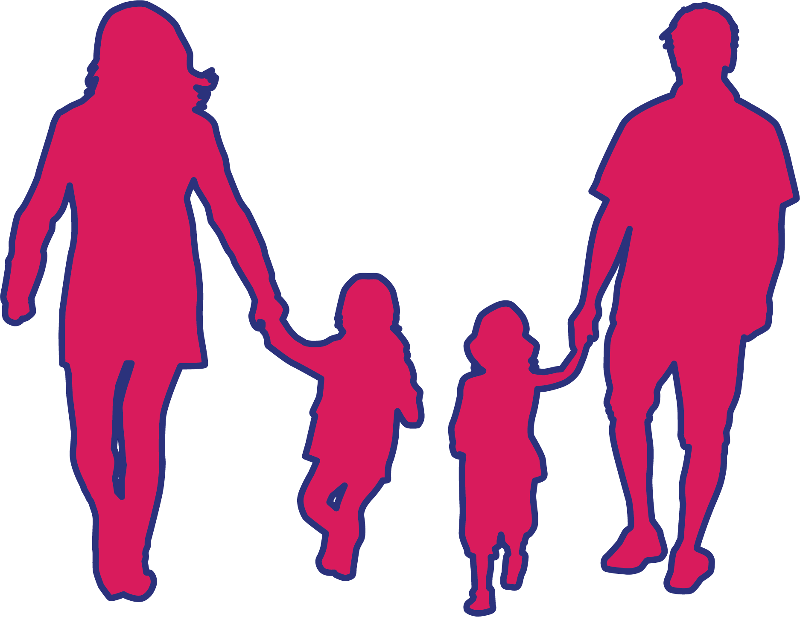

Mencegah Virus Corona
Bagaimana Caranya?

Rutin cuci tangan dengan sabun antiseptik.

Jika tidak memungkinkan cuci tangan, gunakan hand sanitizer dengan kadar alkohol minimal 60 persen.

Pertahankan jarak minimal 1 meter dari orang yang batuk-batuk atau bersin.

Hindari menyentuh tangan, hidung, dan mata.
Bagaimana etika bersin atau batuk yang benar?

Tutup mulut menggunakan tisu atau bagian dalam siku.

Segera buang tisu ke tempat sampah tertutup.
Segera cuci tangan menggunakan air dan sabun atau pembersih tangan.
Kapan harus cuci tangan menggunakan air dan sabun?
Saat secara kasat mata tangan terlihat kotor

Setelah buang air kecil/besar

Setelah batuk atau bersin

Setelah kontak dengan orang yang sakit

Sebelum, saat, dan setelah menyiapkan makanan

Sebelum makan

Setelah menggunakan toilet

Setelah bersentuhan dengan hewan atau membersihkan kotoran hewan
Bagaimana cara cuci tangan yang baik?

Basahi tangan dengan air bersih dan mengalir selama 20 detik.

Gunakan sabun dengan kandungan antiseptik.

Gosok telapak tangan, punggung tangan, dan sela-sela jari.
Bersihkan bagian bawah kuku, bisa dengan menggosokkan ujung-ujung kuku di telapak tangan secara bergantian.

Bilas dengan air bersih mengalir.
Keringkan dengan handuk, tisu, udara atau dianginkan.
Bagaimana cara menggunakan hand sanitizer yang baik?

Cari hand sanitizer yang berbahan dasar alkohol minimal 60 persen.
Teteskan hand sanitizer ke kedua tangan.
Gosok sela-sela jari serta bagian bawah kuku.
Gosok tangan hingga hand sanitizer kering.
Bagaimana kalau tidak ada hand sanitizer?
WHO membagikan formulasi untuk membuat hand sanitizer sendiri.
1.

Ke dalam wadah ukur 1000 ml tuang ketiga bahan berikut:
751,5 ml
Isopropyl alkohol
(dengan kemurnian 99,8 persen)
41,7 ml
Hidrogen Peroksida
(dengan kemurnian 3 persen)
14,5 ml
Gliserol
(dengan kemurnian 98 persen)
2.

Tambahkan air suling/air yang telah didihkan dan didinginkan hingga wadah ukur penuh.
3.
Kocok perlahan agar konten tercampur.
Catatan: Hand sanitizer buatan sendiri tidak memiliki pelembab untuk mengurangi efek alkohol, sehingga tidak disarankan sering digunakan. Hand sanitizer buatan sendiri juga tidak disarankan untuk anak-anak.
Perlukah memakai masker?


Dalam kondisi sehat, Anda hanya perlu masker saat menangani pasien bergejala Covid-19.
Gunakan masker saat sering bersin atau batuk-batuk.
Jangan gunakan masker lebih dari satu kali.
Buang masker jika sudah dilepaskan, dan jangan disimpan untuk dipakai ulang.
Bagaimana dengan barang-barang?

Belum diketahui pasti berapa lama virus bertahan di benda mati.
Diperkirakan virus menempel selama beberapa jam.
Virus bisa dibersihkan dengan disinfektan sederhana.
Bagaimana Cara Menjaga Imunitas Tubuh?
Mengonsumsi protein lebih banyak (dada ayam, kacang-kacangan, ikan)
Mengonsumsi buah dan sayur lebih banyak.

Tidur cukup 8 jam.

Rutin berolahraga.

Pastikan air putih tercukupi.

Minum campuran jahe dan lemon.
Apa yang Harus Dilakukan di Tempat Umum/Transportasi Massal?
Cuci tangan atau gunakan hand sanitizer setelah menyentuh fasilitas publik.

Hindari kerumunan yang membatasi ruang gerak.

Kurangi kontak dengan pegangan atau pintu.
Waspada meletakkan tas di lantai bus/kereta. Segera bersihkan dengan tisu basah.
Hindari mengeluarkan telepon genggam, atau bersihkan HP dengan alkohol setelah penggunaan di tempat umum.

Tidak ngemil di transportasi umum untuk menghindari kontaminasi dari tangan.
Apa yang Harus Disampaikan ke Anak?
